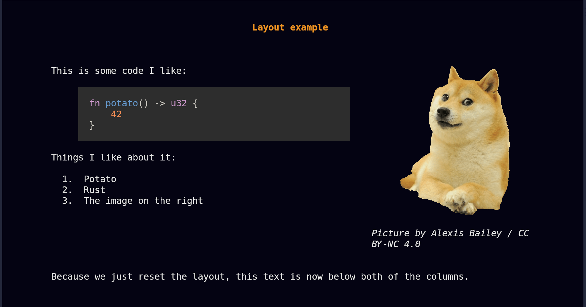

Layouts
presenterm currently supports a column layout that lets you split parts of your slides into column. This allows you to put text on one side, and code/images on the other, or really organize markdown into columns in any way you want.
This is done by using commands, just like pause and end_slide, in the form of HTML comments. This section describes
how to use those.
Wait, why not HTML?
While markdown can contain HTML tags (beyond comments!) and we could represent this using divs with alignment, I don't really want to:
- Deal with HTML and all the implications this would have. e.g. nesting many divs together and all the chaos that would bring to the rendering code.
- Require people to write HTML when we have such a narrow use-case for it here: we only want column layouts.
Because of this, presenterm doesn't let you use HTML and instead has a custom way of specifying column layouts.
Column layout
The way to specify column layouts is by first creating a layout, and then telling presenterm you want to enter each of the column in it as you write your presentation.
Defining layouts
Defining a layout is done via the column_layout command, in the form of an HTML comment:
<!-- column_layout: [3, 2] -->
This defines a layout with 2 columns where:
- The total number of "size units" is
3 + 2 = 5. You can think of this as the terminal screen being split into 5 pieces vertically. - The first column takes 3 out of those 5 pieces/units, or in other words 60% of the terminal screen.
- The second column takes 2 out of those 5 pieces/units, or in other words 40% of the terminal screen.
You can use any number of columns and with as many units you want on each of them. This lets you decide how to structure the presentation in a fairly straightforward way.
Using columns
Once a layout is defined, you just need to specify that you want to enter a column before writing any text to it by
using the column command:
<!-- column: 0 -->
Now all the markdown you write will be placed on the first column until you either:
- Reset the layout by using the
reset_layoutcommand. - The slide ends.
- You jump into another column by using the
columncommand again.
Example
The following example puts all of this together by defining 2 columns, one with some code and bullet points, another one with an image, and some extra text at the bottom that's not tied to any columns.
Layout example
==============
<!-- column_layout: [2, 1] -->
<!-- column: 0 -->
This is some code I like:
```rust
fn potato() -> u32 {
42
}
```
Things I like about it:
1. Potato
2. Rust
3. The image on the right
<!-- column: 1 -->

_Picture by Alexis Bailey / CC BY-NC 4.0_
<!-- reset_layout -->
Because we just reset the layout, this text is now below both of the columns.
This would render the following way:

Other uses
Besides organizing your slides into columns, you can use column layouts to center a piece of your slide. For example, if
you want a certain portion of your slide to be centered, you could define a column layout like [1, 3, 1] and then only
write content into the middle column. This would make your content take up the center 60% of the screen.